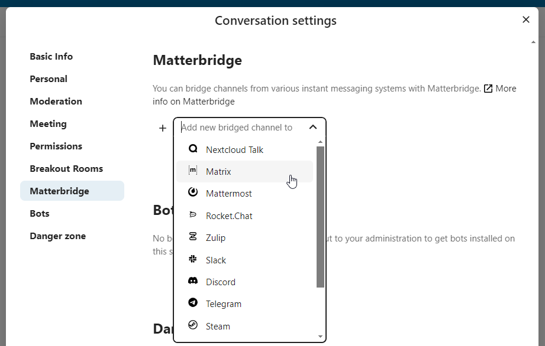
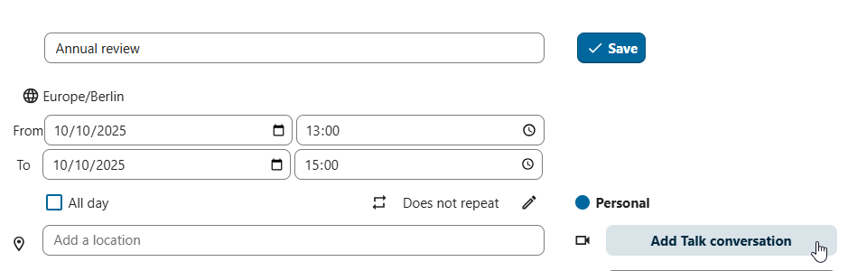
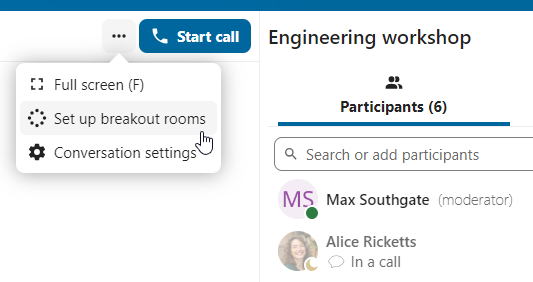
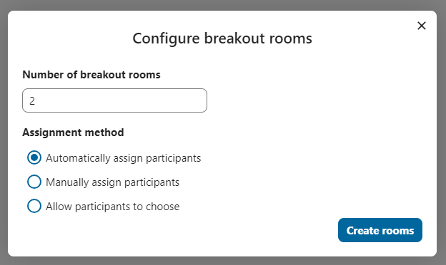
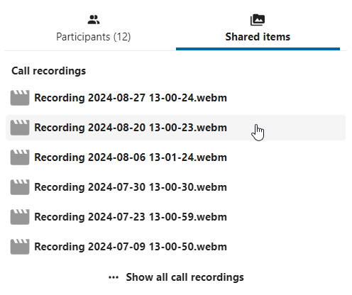
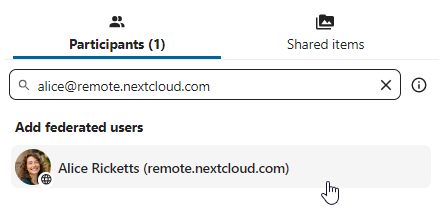
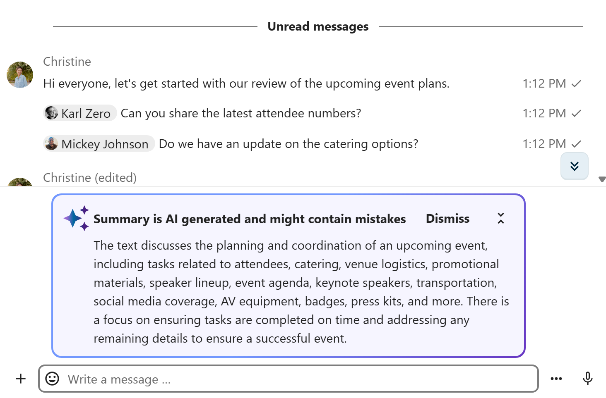
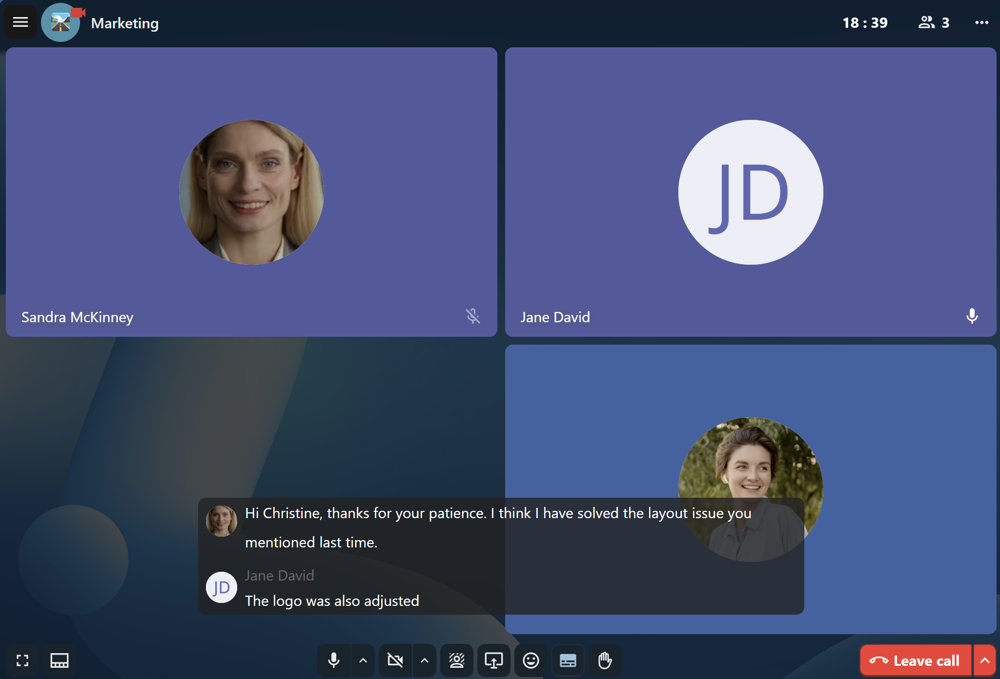

Funcionalidades avançadas do Talk
O Nextcloud Talk tem diversas funcionalidades avançadas que os usuários podem achar úteis.
Notifications and privacy
By default, Nextcloud Talk will notify you about:
New messages in private conversations;
Replies to messages you sent;
Messages mentioning you or group/team you are member of;
Started calls in conversations you are part of.
You can change this behavior in the conversation settings. Additionally, you can configure:
Important conversations: you will be always notificed about new messages, even if you are in “Do Not Disturb” mode;
Sensitive conversations: content of messages will not be shown in the conversation list and obscured from notifications.

To have more control over your privacy, you can also configure the visibility of your typing and read indicators in Talk settings:

Matterbridge
A integração Matterbridge no Nextcloud Talk permite a criação de ‘pontes’ entre conversas no Talk e conversas em outros serviços de bate-papos como o MS Teams, Discord, Matrix e outros. Você pode encontrar uma lista de protocolos suportados na página do Matterbridge no Github
Um moderador pode adicionar uma conexão Matterbridge nas configurações de conversa.
{kind=link}

Cada uma das pontes tem sua própria necessidade em termos de configuração. A maioria das informações está disponível no wiki do Matterbridge e pode ser acessada por meio do menu mais informações no menu .... Você também pode acessar o wiki diretamente.
Sala de Espera
A funcionalidade sala de espera permite que você mostre uma tela de espera a visitantes até que a chamada comece. Isso é ideal para webinários com participantes externos, por exemplo.

Você pode escolher deixar participantes entrarem em um horário específico, ou quando você encerrar a sala de espera manualmente.
Comandos
Nextcloud permite aos usuários executar ações usando comandos. Um comando normalmente se parece com:
/wiki aeronaves
Administradores podem configurar, habilitar e desabilitar comandos. Usuários podem usar o comando help (ajuda) para descobrir os comandos disponíveis.
/help

Encontre mais informações na documentação administrativa do Talk .
Talk de Arquivos
No aplicativo Arquivos você pode conversar sobre arquivos usando a barra lateral, e até mesmo fazer uma chamada enquanto os edita. Você precisa primeiro entrar no bate-papo.


Em seguida, você pode conversar ou fazer uma chamada com outros participantes, mesmo quando começar a editar o arquivo.

No Talk, uma conversa será criada para o arquivo. Você pode conversar de lá, ou voltar para o arquivo usando o menu ... no canto superior direito.

Criar tarefas a partir do chat ou compartilhar tarefas no chat
Se o aplicativo Deck estiver instalado, você pode usar o menu ... de uma mensagem na conversa e torná-la uma tarefa no Deck.


A partir do Deck você pode compartilhar tarefas numa conversa de chat.


Meetings and events
If calendar events have a Talk conversation set as event location, you will see an information about upcoming events inside of this conversation. That way you can stay informed about scheduled meetings or activities directly within your chat. If Calendar app is enabled, you can click on an event to view details.

It is possible to schedule a meeting directly from a conversation. In the dialog, you can set meeting details such as title, date, time and description. You can also choose to invite all participants including email guests, or select specific ones.

Schedule from Calendar
When creating a new event in Calendar, you can set a Talk conversation as event location. This will create a new conversation if one does not exist yet.
{kind=link}

When the event is created, you will see a link to the conversation in the event details. Conversation will also show up in the list of conversations (discoverable by Events filter).

Like instant meetings, event conversations will be automatically deleted after configured period of inactivity (by default 28 days).
Salas Temáticas
As salas temáticas permitem que você divida uma chamada do Nextcloud Talk em grupos menores para discussões mais focadas. O moderador da chamada pode criar várias salas temáticas e atribuir participantes a cada sala.
Nota
No momento, as salas temáticas não estão disponíveis em conversas que podem ser acessadas por convidados (conversas públicas).
Configurar salas temáticas
Para criar salas temáticas, você precisa ser um moderador em uma conversa em grupo. Clique no menu da barra superior e clique em “Criar salas temáticas”.
{kind=link}

Uma caixa de diálogo será aberta onde você pode especificar o número de salas que deseja criar e o método de atribuição dos participantes. Aqui você verá três opções:
Atribuir participantes automaticamente: O Talk atribuirá automaticamente os participantes às salas.
Atribuir participantes manualmente: Você passará por um editor de participantes onde poderá atribuir os participantes às salas.
Permitir que os participantes escolham: Os participantes poderão entrar nas salas temáticas por conta própria.
{kind=link}

Gerenciar salas temáticas
Depois que as salas temáticas forem criadas, você poderá vê-las na barra lateral.

No cabeçalho da barra lateral
Inicie e encerre as salas temáticas: isso moverá todos os usuários na conversa principal para suas respectivas salas temáticas.
Transmita uma mensagem para todas as salas: isso enviará uma mensagem para todas as salas ao mesmo tempo.
Faça alterações nos participantes atribuídos: isso abrirá o editor de participantes, onde você poderá alterar quais participantes estão atribuídos a cada sala temática. A partir desta caixa de diálogo também é possível excluir as salas temáticas.

No elemento de sala temática na barra lateral, você também pode entrar em uma sala temática específica ou enviar uma mensagem para uma sala específica.

Gravação de chamadas
O recurso de gravação oferece aos usuários a oportunidade de:
Iniciar e encerrar gravações durante uma chamada.
Gravar o fluxo de vídeo e áudio do orador, bem como o compartilhamento de tela.
Acessar, compartilhar e fazer download de arquivos gravados para referência ou distribuição futura.
A ativação deste recurso exige que o servidor de gravação seja configurado pela administração do sistema.
Gerenciar uma gravação
O moderador da conversa pode iniciar uma gravação junto com o início da chamada ou a qualquer momento durante a chamada:
Antes da chamada: marque a caixa de seleção “Começar a gravar imediatamente com a chamada” em “Configurações de mídia” e, em seguida, clique em “Iniciar chamada”.
Durante a chamada: clique no menu da barra superior e, em seguida, clique em “Começar a gravar”.


A gravação começará em breve, e você verá um indicador vermelho ao lado do tempo da chamada. Você pode encerrar a gravação a qualquer momento enquanto a chamada ainda estiver em andamento clicando nesse indicador e selecionando “Parar gravação” ou usando a mesma ação no menu da barra superior. Se você não interromper manualmente a gravação, ela será encerrada automaticamente quando a chamada terminar.

Depois de parar uma gravação, o servidor levará algum tempo para preparar e salvar o arquivo gravado. O moderador, que iniciou a gravação, recebe uma notificação quando o arquivo é carregado. A partir daí, ele pode ser compartilhado no bate-papo.

{kind=link}

Consentimento de gravação
Por motivos de conformidade com vários direitos de privacidade, é possível solicitar aos participantes o consentimento para serem gravados antes de entrarem na chamada. A administração do sistema tem a flexibilidade de utilizar este recurso de várias maneiras:
Desativar completamente o consentimento.
Ativar o consentimento obrigatório em todo o sistema, exigindo consentimento para todas as conversas.
Permitir que os moderadores configurem esta opção em um nível de conversa. Nesses casos, os moderadores podem acessar as configurações da conversa para configurar esta opção adequadamente:

Se o consentimento de gravação estiver ativado, todos os participantes, inclusive os moderadores, verão uma seção destacada nas “Configurações de mídia” antes de entrar em uma chamada. Esta seção informa aos participantes que a chamada poderá ser gravada. Para dar consentimento explícito para a gravação, os participantes devem marcar a caixa. Se não derem consentimento, eles não poderão entrar na chamada.

Conversas federadas
Com o recurso de Federação, os usuários podem criar conversas em diferentes instâncias federadas do Talk e usar os recursos do Talk como se estivessem em um mesmo servidor.
É necessário que o recurso seja configurado pela administração do sistema.
Enviar e aceitar convites
O moderador da conversa pode enviar um convite a um participante em um servidor diferente:
{kind=link}

Ao receber uma notificação, o usuário verá um contador de convites pendentes acima da lista de conversas.

Ao clicar nele, serão fornecidas mais informações sobre a parte que convida, e o usuário poderá aceitar ou recusar o convite.

Ao aceitar o convite, a conversa aparecerá na lista como qualquer outra.

You can use it further to chat with participants from other federated servers, join calls and use other available Talk features.
Chat summary
When AI assistant is enabled, a summary can be generated if there are more than 100 unread messages. You can generate it by pressing the button that is visible in chat above the first unread messages.

{kind=link}

Call live transcription
Call live transcription allows to transcribe the speech in real-time during a call. It is set up by the system administration (High-performance backend and Live Transcription App are required). Moderators need to set the language of the transcription in the conversation settings. All participants then can enable or disable the transcription for themselves in the call bottom bar. When enabled, the transcription will appear in the bottom and will be updated in real-time.
{kind=link}
